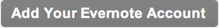
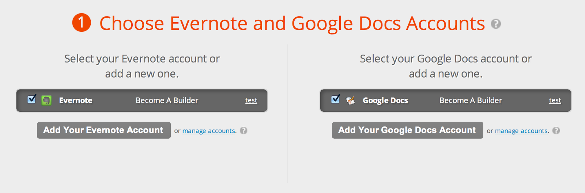
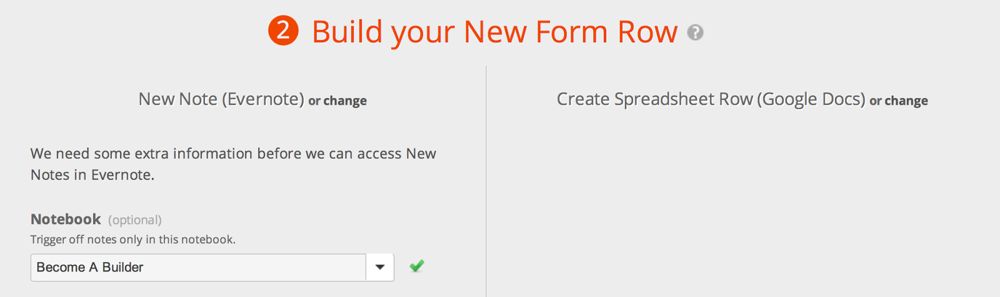

The purpose of this tutorial is to give you a starting point to get...started <ahem> building technology on the web. It covers the absolute basics and some tricks of the pros, some of which have taken me literally years to figure out. Incidentally, these magic tricks might have saved me years in hair pulling.
I remember the first thing that gave me the most trouble was getting a web page to show up on the internet. The domain purchasing and hosting I kind of understood, but how was I supposed to get a simple “Hello world” to show up in the browser. Or load a bunch of HTML and CSS code I saw everyone talking about.
There’s literally nothing on the web showing you that most basic thing. So that’s where we’re going to start. If you know it, skim through it. If you don’t, hopefully just this small nugget of information is valuable enough to feel like you received a benefit from this resource.
I’m going to walk through everything, step-by-step, that I did to bring this Become A Builder idea to a live product. You can use none, some, or all of this and copy everything for your own tribe, whether you’re fascinated by women’s heels with red bottoms, kites that fly above 50 meters, or building your own basketball bracket opinion newsletter.
And as always, I’m only an email (seanmeverett@gmail.com) or tweet (http://twitter.com/SeanMEverett) away. Feel free to give me a shout if you get stuck or want to schedule an hour to discuss your idea with me.
Part of my new startup’s philosophy is that we help other people more than we help ourselves, so hopefully Become A Builder can live up to that promise.
“Alone we survive, together we thrive.”
Chapters to Becoming A Builder
Chapter 5
Finishing the Script: Zapier + Google Spreadsheet
Ok, now that we’ve got the first part of the script up and running, we need to finish the second part of it to build our link database automatically.
Head on over to https://zapier.com, which is conceptually similar to IFTTT, but for different use cases, and lets get started. It should look like this:
Sign up for the free account (don’t worry, you don’t need to enter your credit card information) by clicking the Login/Signup link in the upper right-hand corner.
At this point you may be asking yourself, “How does he find all this stuff and know how to do all of this.” Well, that’s exactly the reason I built this daily email with Golden Nugget links. It’s to start your explorations into the vast corners of the internet so you have a mental rolodex of available resources and don’t have to build everything from scratch. Coupled with a bit of childhood curiosity and the fortitude to never give up, you can and will build anything.
Click on the button to “Create New Zap” and you should be on this screen:
Search for “Evernote” in that little box and drag the icon up to the left-hand dotted-line box. Pick the “New Note” trigger by clicking on the gray box.
Then do another search for “Google” and drag the Google Docs icon into the right-hand dotted-line box. Pick the “Create Spreadsheet Row” action:
This is how both Zapier and IFTTT work. There’s a trigger, then an action. Or more conceptually: when this happens, do that.
Now click the orange button “Create This Zap”:
A new section should open up below with numbered sections. The first one is selecting/connection your Evernote Notebook you created previously and a Google Spreadsheet that you’re going to set up. Click the button to add your Evernote account:

Add a name, it doesn’t matter what, but I suggest the same name as the Evernote notebook:
Click on the “click here to open the pop-up manually”:
Now login to Evernote to give Zapier access:
And then you should be taken back to zapier.com and check the box to select your account:
Ok, so now it’s time to get a Google Spreadsheet set up so it can function as our Link Database. Shift to the right side of the Zapier page and add your Google Docs account using the same process and your screen should look like the following:
Great, now scroll down to #2 and select your Evernote notebook:

Ok, now we need to go to Google Drive, sign up for an account (if you don’t already have one) and click Create for a new Spreadsheet:
Once the spreadsheet opens, click the “Untitled Spreadsheet” to change the name to match your Evernote notebook:
And then in cell A1, type “Title” and in cell B1 type “URL”:
Then in cells A2 and B2 just type anything, doesn’t matter what because we can delete it later, but we need it in order for Zapier to recognize that these are the cells with content.
Now at the very bottom of the browser window, you should see a little tab on the spreadsheet that says “Sheet 1”. Click the little arrow next to it and rename the sheet to “Links”.
Since Google automatically saves that document whenever you make changes, you’re good to go and safe to exit back to Zapier where we left off in section 2. Now you can select both the Spreadsheet and Sheet that you just created and named:
Now drag the orange button named Title to the title field and the button named Url to the url field:
Great, we’re all set. We don’t need to do anything in sections 3 or 4 (unless you want to confirm that things are working properly, which they should), so navigate down to section 5 and click the “Enable and start syncing new data” button:
Congratulations! You’re all set and things should start working shortly. Here’s how to test that everything is working properly:
If everything’s working properly, you can no go ahead and delete that dummy row of data in the 2nd row that you put in to configure zapier. Just right click on the row that says “2” and choose the delete option.
Another item of note is that you can go back into Google Drive and change your spreadsheet’s name at any time without it affecting your Zapier script.
Boom, you’ve now officially created a first fully functional app that does something useful and saves you time. You don’t have to manually send yourself an email with the blog post, copy the title and all the text, remove the formatting, and copy the URL, then add it to a spreadsheet. With Reeder and this script, you’ve probably saved yourself hours every day.
Look at you all builder-ery. Or something like that.